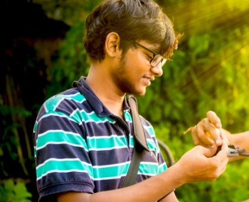

Hello, I'm a User Experience
Designer based in India.
About me

Hi, I'm Shivam Sunderam, a final year undergrad student in Design at the Indian Institute of Technology, Guwahati. My focus is on the user experience design, interaction design and design research.
I share a keen interest in understanding the human behaviours and patterns, exploring new concepts and ideas to create impact in the life of an individual.
When I'm not designing, I prefer watching TV shows or reading articles on Medium.